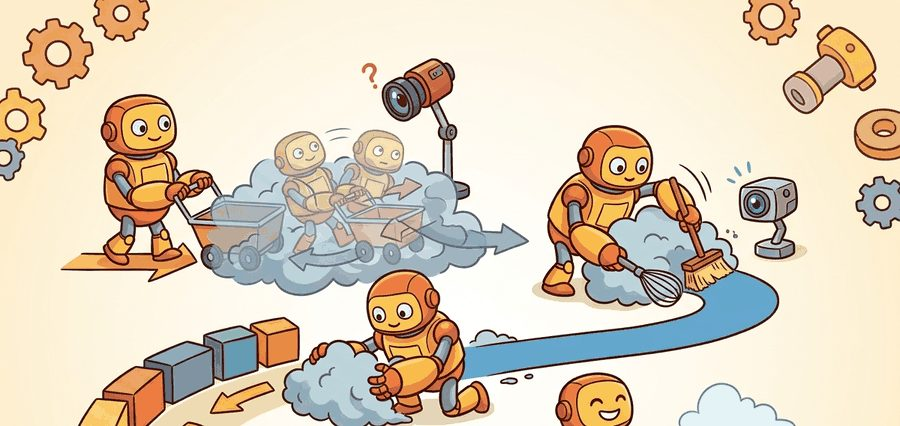
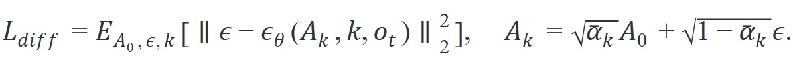
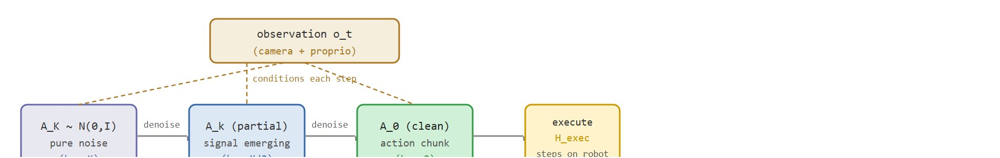

"The policy did not choose an action. It erased the noise until an action was all that remained."
A Denoising Practitioner

This section assumes familiarity with the action-chunking formulation introduced in section 22.1 and with the imitation learning objective covered in section 21.2. The denoising math here is extended in section 22.5, which replaces the noise-prediction objective with flow matching for faster inference. The multimodal action distribution idea recurs in Part VII alongside robot foundation models in section 35.2.
A robot arm hesitates at a bowl of tangled cables: any single "best" grasp collapses three equally valid approaches into a blurry average that succeeds at none of them. Diffusion Policy sidesteps that collapse by starting from pure noise in action space and iteratively denoising toward a coherent trajectory, conditioned on the current observation. The result is a policy that can hold several viable futures in tension until the observation resolves the ambiguity. Right now this matters because robot manipulation tasks are full of such multimodal choices, and every prior behavior-cloning method that outputs a single Gaussian mean pays a steep price in those moments. Here you will derive the training objective, trace one full denoising pass, and see how receding-horizon execution closes the loop.
What if a robot generated its next move the way a sculptor frees a figure from marble: not by deciding on a pose, but by chipping random noise away until a coherent action is all that remains? That is exactly what Diffusion Policy does, starting from pure Gaussian noise in action space and denoising it into a trajectory conditioned on what the camera sees right now. Figure 22.4A previews the full picture: a noise-conditioned U-Net starts from Gaussian noise in action space and, conditioned on the current observation, steps the action toward a clean trajectory over K denoising steps.
The key question in Diffusion Policy: action generation by denoising is practical: what must the agent know, what can it observe, what action is available, and what evidence shows that the action worked under the stated conditions?
A representation earns its place when it changes the measurable action interface. In diffusion policy: action generation by denoising, the reader should keep asking which decision becomes easier, safer, or more reliable.
For Diffusion Policy: action generation by denoising, the practical design rule is to make the interface inspectable before optimization begins: inputs, outputs, units, latency, bounds, and failure labels should all be visible in the saved artifact.
The mechanism in Diffusion Policy: action generation by denoising is the contract between representation and action. Name what enters the module, what leaves it, which assumptions make that transformation valid, and which log would reveal a bad handoff.
For Diffusion Policy: action generation by denoising, keep one concrete rollout in view. A sensor reading becomes an estimate, the estimate constrains an action, the action changes the world, and the next observation confirms or contradicts the assumption. The section's idea is useful only if it improves that loop.
from pathlib import Path
dataset_root = Path("robot_demos")
for episode in sorted(dataset_root.glob("episode_*")):
print("inspect", episode.name)
print("next step: convert demonstrations to the LeRobotDataset format")robot_demos/episode_* directory tree and prints each episode name, then flags the LeRobotDataset conversion as the next concrete step before any Diffusion Policy training begins.Expected output: the printed trace for Diffusion Policy: action generation by denoising should expose the method configuration, the measured evidence field, and the failure label. If one of those fields is missing or unchanged under the perturbation, the example is not yet an evaluation artifact.
The denoising process behind these numbers is defined formally later in this section, under "Diffusion Policy As Conditional Denoising"; for now, treat "denoising step" as one pass of a network that removes a little noise from a proposed action.
Consider a specific case: a Diffusion Policy trained on the Chi et al. (2023) Push-T task uses a horizon of 16 steps, K=100 DDIM (Denoising Diffusion Implicit Models, a fast sampling schedule for diffusion models) denoising steps, and a U-Net (a convolutional network with a contracting-then-expanding, "U"-shaped structure, commonly used to predict noise at each denoising step) conditioned on a 96x96 RGB observation. At inference, the policy samples Gaussian noise of shape (16, 2) representing 16 future (x, y) end-effector waypoints, then iteratively denoises over 100 steps to produce a clean trajectory. The robot executes the first 8 steps (the receding-horizon fraction), re-observes, and denoises again. Measured task success on the held-out evaluation set reaches roughly 90% when the T-block starts near the demonstrated positions, but drops to around 55% when the block is rotated 45 degrees outside the training distribution, which concretely illustrates the coverage limit.
The from-scratch fragment should expose the assumption behind diffusion action sequences with sampler steps, horizon, latency, and receding-horizon execution. For serious runs, use LeRobot, robomimic, ACT, Diffusion Policy, VQ-BeT, ALOHA, GELLO, or UMI with the same manifest and evaluator.
The data interface feeds the policy; the policy itself defines what that iterative denoising optimizes.
Diffusion Policy represents a robot policy as an iterative denoising process over an action sequence. Training samples a clean action chunk $A_0$, adds noise at diffusion step $k$ to produce $A_k$, then trains a network $\epsilon_\theta$ to predict the injected noise from the noisy action chunk and the observation context:

Training loops over the demonstration set: for each stored clean chunk $A_0$, sample a random step $k$ and a noise draw $\epsilon$, form the noisy chunk $A_k$ with the formula above, then take one gradient step on $\mathcal{L}_{diff}$ so that $\epsilon_\theta$ predicts $\epsilon$ from $(A_k, k, o_t)$. No denoising happens during training; only at inference does the network run its prediction repeatedly, in reverse, to reconstruct a clean chunk from noise.
At inference, the policy starts with Gaussian noise and denoises it into an action chunk. It then executes the first part under receding-horizon control (executing only a leading fraction of the planned chunk, then re-observing and re-planning, rather than committing to the whole chunk blindly; the mechanics are covered in detail later in this section). A standard regression policy averages all demonstrated grasps into one mean pose, which physically works for none of them. A diffusion policy instead samples one coherent mode per rollout. That difference helps explain why denoising beats averaging on contact tasks, typically by 20 to 40 percentage points in the head-to-head evaluations reported in the Chi et al. benchmark. A policy that outputs the mean of incompatible demonstrations does not split the difference; it creates a third option that satisfies none of them. Multimodal action distributions arise naturally: different denoising samples can commit to different valid futures, such as grasping from the left or from the right. The diagram below traces this inference pass step by step: pure noise $A_K$ is refined into a clean action chunk $A_0$ across K observation-conditioned denoising steps, after which only the first $H_\text{exec}$ steps execute on the robot before the receding-horizon loop repeats.

Input: current observation $o_t$, trained noise-prediction network $\epsilon_\theta$, denoising schedule $\{\bar\alpha_k\}_{k=1}^{K}$, number of denoising steps $K$, action horizon $H$, receding-horizon fraction $H_{\text{exec}} \leq H$
Output: executed action subsequence $A_{0}^{(1:H_{\text{exec}})}$ applied to the robot
Think of $\bar\alpha_k$ as the ratio of cocoa to milk when you dissolve a spoonful of cocoa powder into a glass of milk: at $k=0$ the cocoa (clean action) is fully intact; as $k$ increases you pour in more milk (noise) until at $k=K$ the original powder is completely invisible in the liquid. The network never sees the original powder directly; during training it sees only the murky mixture at each ratio and learns to estimate how much cocoa was stirred in. Inference then runs the process in reverse, starting from a glass of pure white milk and progressively separating out a coherent dark cocoa trace, step by step, guided by what the camera currently sees.
Receding-horizon execution matters because a physical robot cannot pause mid-motion to replan. Committing to the full denoised chunk would lock the arm into a trajectory planned on a stale observation. Any slip, external disturbance, or sensor noise then accumulates uncorrected until the chunk ends. In practice, a 100-step chunk at 10 Hz means 10 seconds of blind execution. That is long enough for a bumped object to travel 5 to 10 cm out of the gripper's path while the arm confidently closes on empty air. Executing only the first $H_\text{exec}$ steps keeps the robot responsive, because the policy re-anchors to a fresh observation before errors compound into contact failures or joint-limit violations. (Note: the diffusion policy literature calls this pattern receding-horizon execution, borrowing the name from receding-horizon control in model predictive control but without the online replanning that MPC requires.)
Once the $K$ denoising steps produce a clean chunk $A_0$, the robot executes steps 1 through $H_\text{exec}$ open-loop at the controller frequency. Meanwhile the policy samples fresh noise and runs the next denoising pass on the new observation $o_{t+H_\text{exec}}$. Because the two overlap, the next chunk is ready before the current one ends, hiding inference latency behind execution and keeping the motion stream continuous.
Regression tends to average incompatible actions. Denoising learns a distribution over coherent chunks, so the policy can commit to one valid mode instead of blending several into a physically meaningless middle.
A policy that averages two valid grasps produces a third grasp that executes neither: the gripper lands between the demonstrations, touching nothing.
Code Fragment 3 performs the forward noising calculation for one scalar action so the formula is inspectable.
# Apply one diffusion noising step to an action value.
# The calculation mirrors the training target for denoising policies.
import math
clean_action = 0.40
epsilon = -0.30
alpha_bar = 0.81
noisy_action = math.sqrt(alpha_bar) * clean_action + math.sqrt(1 - alpha_bar) * epsilon
print(f"noisy action: {noisy_action:.3f}")
print(f"target noise: {epsilon:.3f}")noisy_action = sqrt(alpha_bar) * clean_action + sqrt(1 - alpha_bar) * epsilon for one action value, printing both the resulting noisy action and the target noise the network must learn to recover.Trace three DDIM reverse steps on a single 1D action, using a tiny schedule so every number is checkable by hand. Suppose the true clean action is $A_0 = 0.40$, but the policy does not know this; it starts from sampled noise $A_3 = 1.20$ and runs the reverse update $\hat A_0 = (A_k - \sqrt{1-\bar\alpha_k}\,\hat\epsilon)/\sqrt{\bar\alpha_k}$ followed by $A_{k-1} = \sqrt{\bar\alpha_{k-1}}\,\hat A_0 + \sqrt{1-\bar\alpha_{k-1}}\,\hat\epsilon$. Take the schedule $\bar\alpha_3 = 0.20,\ \bar\alpha_2 = 0.55,\ \bar\alpha_1 = 0.85,\ \bar\alpha_0 = 1.00$.
Step k=3 (start, $A_3 = 1.20$): the trained network predicts $\hat\epsilon = 0.95$. Then $\hat A_0 = (1.20 - \sqrt{0.80}\cdot 0.95)/\sqrt{0.20} = (1.20 - 0.850)/0.447 = 0.783$. Re-noise to step 2: $A_2 = \sqrt{0.55}\cdot 0.783 + \sqrt{0.45}\cdot 0.95 = 0.581 + 0.637 = 1.218$.
Step k=2 ($A_2 = 1.218$): network now predicts $\hat\epsilon = 0.70$. Then $\hat A_0 = (1.218 - \sqrt{0.45}\cdot 0.70)/\sqrt{0.55} = (1.218 - 0.470)/0.742 = 1.009$; re-noise to step 1: $A_1 = \sqrt{0.85}\cdot 1.009 + \sqrt{0.15}\cdot 0.70 = 0.930 + 0.271 = 1.201$... and the predicted $\hat\epsilon$ shrinks each round as signal emerges.
So far: each reverse step predicts the noise, uses it to estimate a clean action, then re-noises to a lower step; across k=3 and k=2 the predicted noise magnitude has already dropped from 0.95 to 0.70, which is the loop structure a well-trained network relies on to converge. The hand-picked $\hat\epsilon$ values used here are illustrative and do not actually converge to $A_0 = 0.40$; a correctly trained network's predictions would track the true injected noise closely enough to land near it.
Step k=1 ($A_1 = 1.201$): the network, seeing an almost-clean input, predicts only $\hat\epsilon = 0.50$. Then $\hat A_0 = (1.201 - \sqrt{0.15}\cdot 0.50)/\sqrt{0.85} = (1.201 - 0.194)/0.922 = 1.092$, and the final $A_0 = \hat A_0$ at $\bar\alpha_0 = 1.00$. The point to feel here is the loop structure, not the exact landing value: each step subtracts a predicted-noise term and rescales; with the hand-picked $\hat\epsilon$ values used for hand-checkability, this toy run lands at $1.092$, not $0.40$, because those noise predictions were chosen for arithmetic simplicity rather than sampled from an actually trained network. A network trained to good accuracy on real data would predict $\hat\epsilon$ close enough to the true injected noise at each step to drive $\hat A_0$ toward the demonstrated $0.40$ instead. The observation $o_t$ is fed unchanged into all three predictions; only the noisy action $A_k$ and the step index $k$ change.
Hand-tracing a single scalar showed why the loop converges. Deploying it on real hardware is mostly about pinning down the interfaces and budgets that the math quietly assumed.
Before reading the steps below, ask yourself: if your policy takes 180 ms to generate each action chunk but your robot runs at 10 Hz, what happens to the motion stream? The answer shapes every deployment decision that follows.
A common misconception is that the K denoising iterations correspond to K steps the robot takes in the world, as if the arm moves a little further with each denoising pass. This is wrong: all K denoising steps are pure computation in action space, performed before the robot moves at all. The observation is captured once, frozen, and fed into every denoising step unchanged; the robot only acts after the full chain of K steps produces a clean action chunk. The correct mental model is a darkroom enlarger: you do not expose the paper one chemical step at a time while the scene shifts; you fix the scene first, then run the full development process, and only then do you have a usable image to act on.
The common mistake in Diffusion Policy: action generation by denoising is to celebrate the component score before checking the closed-loop handoff. The failure usually appears at the boundary: stale state, wrong frame, delayed action, saturated actuator, or metric that ignores the real task cost.
Three failure modes appear most often in deployed diffusion policies. First, inference latency. With K=100 denoising steps on a U-Net, a single action chunk can take 80-200 ms to generate, too slow for a 10 Hz control loop. Practitioners reduce K to 10-20 using DDIM sampling, but aggressive step reduction can produce blurry or jerky trajectories. Second, out-of-distribution contact. Suppose the demonstration set covers grasping from above but the object shifts 15 cm forward. The denoised action chunk then steers the gripper into empty space with high confidence, because the model learned the contact geometry, not the object location. Third, mode collapse under limited data. With fewer than roughly 50 demonstrations per task mode, the denoising network may always converge to the same mode and ignore the alternative valid grasp, defeating the multimodal advantage that motivates the approach (as observed in Chi et al., 2023 and follow-on replication work through 2024).
When reducing DDIM steps to cut inference latency, set num_inference_steps in the DDIMScheduler config rather than retraining: the official real-stanford/diffusion_policy repo exposes this as inference_num_ddim_iters in the hydra config (Hydra, a YAML-based configuration framework used to set hyperparameters without editing code) and defaults to 100. Dropping to 16 steps typically keeps task success within 5 percentage points of the 100-step baseline on Push-T while cutting chunk generation time from roughly 150 ms to under 25 ms on a single GPU. Verify on your own task before deploying, because contact-rich tasks with tight tolerances degrade more sharply than planar push tasks at low step counts.
A robot learning engineer applying diffusion policy: action generation by denoising starts by recording the robot body, camera setup, action units, operator source, and split policy for every episode. That record makes it possible to compare ACT with a baseline without changing the task definition midstream.
For diffusion policy: action generation by denoising, the useful test is simple: could a teammate point to the log line, plot, or trace that proves the idea changed the agent's next action?
Consistency models for one-step action generation. Standard DDPM inference requires 100 denoising steps; consistency distillation collapses that into one or two steps with minimal task-success loss. Song et al. (2023, "Consistency Models", ICML 2023) established the base technique; Prasad et al. (2024, "Consistency Policy", RSS 2024) adapted it directly to visuomotor policies, cutting chunk generation time to under 5 ms on a single GPU while matching diffusion policy success rates on contact-rich tasks. Active work focuses on whether consistency training can match quality on dexterous in-hand manipulation, where diffusion's multimodal expressiveness matters most.
Flow matching as a drop-in replacement for diffusion. Flow matching trains a vector field that moves noise to data along straight paths rather than the curved DDPM schedule, which enables fewer neural-function evaluations at inference. Black et al. (2024, "pi0", Physical Intelligence) and the broader robot-learning community at Google DeepMind adopted flow matching in their generalist policy backbones for this reason. Ongoing research asks how to choose the flow path (linear vs. optimal transport) to minimize the gap between a simulated denoising trajectory and a real manipulation contact event.
Language-conditioned diffusion policies that generalize across tasks. Teams at UC Berkeley (Chi et al., 2023 extended; Gu et al., 2024, "RT-Diffusion") and Physical Intelligence (Black et al., 2024) condition the denoising network on language embeddings from a frozen vision-language model, allowing one policy to handle many tasks without per-task fine-tuning. The key open question is how to prevent the language conditioning from collapsing: empirically, with fewer than roughly 500 demonstrations per language instruction, the diffusion network ignores the language token and reverts to a single average behavior (as reported in early 2024 evaluations of these systems).
Open problem for a PhD student: All current consistency and flow-matching policies evaluate inference quality by task-success rate alone, which conflates policy expressiveness with environment stochasticity. A rigorous study could design a controllable multimodal manipulation benchmark, systematically vary the number of valid modes (2, 4, 8) and the tolerance radius for each mode, and measure how well each sampler (DDPM, DDIM, flow matching, consistency) recovers the true mode distribution as quantified by kernel-density coverage, not just binary success. This would clarify whether faster samplers are losing quality in low-tolerance contact modes or only in easy planar tasks.
Can you name the observation, state estimate, action, success metric, and most likely failure mode for diffusion policy: action generation by denoising? If not, the system boundary is still too vague.
Diffusion Policy: action generation by denoising becomes useful when it is tied to a closed-loop contract. In this Part V section on Diffusion Policy: action generation by denoising, the contract names the observation stream, the state estimate, the action representation, the timing budget, and the evaluation artifact. Without that contract, a model can look capable in a notebook while failing the first time a sensor drops a frame or a controller saturates.
For Diffusion Policy: action generation by denoising, separate the conceptual claim, the systems claim, and the evidence claim. A plausible mechanism, a clean interface, and a closed-loop result are different claims; the section should keep their evidence separate.
| Tool or Library | Role in the Topic | Builder Advice |
|---|---|---|
real-stanford/diffusion_policy | Official Chi et al. (2023) training and DDIM-inference code for Push-T and robomimic tasks | Shortest path from the noise-prediction objective to a runnable policy; set inference_num_ddim_iters to trade latency for success. |
| LeRobot (Hugging Face) | Dataset format, training, and eval for diffusion policy, ACT, and VQ-BeT on real arms (SO-100, Aloha) | Use when you want a maintained Diffusion Policy implementation plus the LeRobotDataset converter for your own demonstrations. |
| robomimic | Standardized manipulation benchmark and demo loader (Lift, Can, Square, Transport) | Use to compare diffusion policy against BC-RNN and other baselines on the same demonstration splits. |
| MuJoCo / robosuite | Physics simulation backing Push-T and the robomimic contact tasks | Use to run receding-horizon rollouts and inject perturbations (object rotation, lighting) without real-hardware risk. |
| ALOHA / GELLO / UMI | Low-cost teleoperation rigs that collect the bimanual and in-the-wild demonstrations diffusion policy trains on | Use when sourcing demonstrations; record robot body, camera setup, and action units per episode so the data contract stays versioned. |
For Diffusion Policy: action generation by denoising, start with a small baseline that logs inputs, outputs, units, timestamps, and termination conditions before moving to Gymnasium or PettingZoo. The library run should keep the same artifact schema, so the comparison remains a same-task evaluation.
When Diffusion Policy: action generation by denoising fails, avoid labeling the whole method as weak. First assign the failure to perception, state estimation, planning, control, timing, data coverage, or evaluation. Then rerun one controlled perturbation that isolates the suspected cause. This pattern turns a disappointing rollout into a reusable diagnostic asset.
Diffusion Policy: action generation by denoising should be evaluated through four lenses: the learning objective, the robot interface, the data artifact, and the deployment failure mode. Action generators differ mainly in how they represent time, uncertainty, and multimodality across the next chunk of motion.
For Diffusion Policy exposes sampler latency, denoising horizon, receding-horizon execution, and multimodal contact behavior, define observations, action representation, dataset source, rollout evaluator, and failure labels before training. Then compare baseline and library implementation on the same configuration.
For Diffusion Policy exposes sampler latency, denoising horizon, receding-horizon execution, and multimodal contact behavior, each demonstration binds operator behavior, robot body, sensor calibration, action representation, and reset distribution. Changing one field creates a new evaluation contract.
| Agent Lens | Question To Answer | Concrete Evidence |
|---|---|---|
| Curriculum and depth | What concept is new here, and why does Part V need it? | A definition, a worked example, and a failure case tied to the perception-action loop. |
| Code and tools | Which maintained tool removes boilerplate after the from-scratch baseline? | ACT, Diffusion Policy, flow matching, VQ-BeT, ALOHA evaluated against the same task contract. |
| Data and evaluation | What distribution produced the behavior, and where can it break? | Train, validation, and stress splits with explicit robot, camera, timing, and license metadata. |
| Publication quality | Can the reader reproduce the claim without hidden context? | Captions, bibliography cards, cross-links, and a same-artifact audit trail. |
Do not claim that diffusion policy: action generation by denoising improves robot learning unless the baseline and the proposed method share the same robot, task split, reset distribution, success metric, and random seed policy. Otherwise the comparison may be measuring dataset difficulty rather than method quality.
For Diffusion Policy exposes sampler latency, denoising horizon, receding-horizon execution, and multimodal contact behavior, judge the method by closed-loop recovery, latency, stability, contact behavior, and failure labels under the same robot, reset distribution, cameras, and evaluator.
Who: A robot learning engineer evaluating diffusion action sequences with sampler steps, horizon, latency, and receding-horizon execution on the same manipulation benchmark, robot, camera setup, and reset protocol.
Situation: The engineer needs to decide whether diffusion policy: action generation by denoising is ready for a weekly policy comparison across 120 demonstrations and 30 held-out rollouts.
Decision: They keep the smallest runnable baseline for diffusion action sequences with sampler steps, horizon, latency, and receding-horizon execution, then compare the maintained implementation under the same manifest, seed, split, and rollout evaluator.
Result: The team gets one artifact for diffusion action sequences with sampler steps, horizon, latency, and receding-horizon execution with task success, intervention labels, timing violations, recovery behavior, and failure categories.
Lesson: diffusion action sequences with sampler steps, horizon, latency, and receding-horizon execution earns trust only when the data contract, action representation, and rollout evaluator are versioned together.
Before leaving this section, write one sentence that links diffusion policy: action generation by denoising to each of these connected chapters: Chapter 21: Imitation Learning, Chapter 23: Teleoperation and Data Collection, Chapter 35: Robot Foundation Models and Cross-Embodiment Learning. If any link feels forced, the section needs a sharper boundary or a clearer prerequisite recap.
Physical Intelligence's pi0 (2024) builds its generalist robot policy on a flow-matching action head, the direct descendant of Diffusion Policy's denoising formulation, to emit smooth multi-step action chunks for tasks like folding laundry and bussing tables across multiple robot embodiments. The same denoising-into-action-chunks idea also ships in Hugging Face LeRobot, where the Diffusion Policy implementation trains on real SO-100 and ALOHA arms. Choosing iterative denoising over single-mean regression is what lets these systems commit to one coherent grasp instead of averaging incompatible demonstrations into a useless middle.
Goal: measure empirically how the number of DDIM denoising steps $K$ trades inference latency against task success, the central deployment knob of this section.
Tools needed: the real-stanford/diffusion_policy repo (or lerobot), a pretrained Push-T diffusion checkpoint, a single GPU (or CPU for a slow run), and Python with torch and time.
What to do (15-30 min): load the pretrained Push-T policy and run 30 evaluation rollouts in the MuJoCo/robosuite simulator. Set num_inference_steps (the DDIMScheduler field, exposed as inference_num_ddim_iters in the hydra config) to each of $K \in \{100, 50, 16, 8, 4\}$ without retraining. For each value, time one chunk generation with time.perf_counter() and record the success rate over the 30 rollouts.
What to vary: the step count $K$; optionally also rotate the T-block 45 degrees to add an out-of-distribution condition.
What to observe: plot success rate and per-chunk latency against $K$. You should see latency fall roughly linearly with $K$ while success stays nearly flat down to about $K=16$, then drop more sharply, the curve that justifies aggressive step reduction for planar tasks but warns against it for contact-rich ones.
Diffusion Policy: action generation by denoising is useful when it makes the perception-action loop more reliable, not when it merely adds a more impressive model name.
Design a method-matched experiment for Diffusion Policy: action generation by denoising. Specify the environment, observation schema, action interface, metric, and one perturbation that targets the section's core assumption.
Beginner (weekend): Train a minimal Diffusion Policy on the Push-T task using the real-stanford/diffusion_policy repo with MuJoCo as the simulator; the key challenge is configuring the DDIM scheduler step count so that inference fits within a 100 ms budget and logging task success separately for in-distribution and 45-degree-rotated object poses. Intermediate (1-2 weeks): Collect 50 demonstrations with LeRobot on a pick-and-place task in PyBullet, train a diffusion policy, then implement the overlapping-chunk inference loop so that the next denoising pass begins while the current chunk is executing, and measure whether latency hiding improves effective control frequency. Intermediate (1-2 weeks): Port a trained diffusion policy to a ROS2 node that subscribes to a camera topic and publishes joint commands, stress-test receding-horizon execution by injecting simulated perception dropouts mid-episode, and record structured failure labels (perception dropout vs. contact error) to identify which failure mode dominates under sensor noise.
This section grounded diffusion policy: action generation by denoising in an explicit robot-data contract: observations, actions, demonstrations, evaluation splits, and failure labels. The next reading step is Section 22.5, where the same contract is carried into the next technique or chapter.
Zhao, T. Z. et al. (2023). Learning Fine-Grained Bimanual Manipulation with Low-Cost Hardware. RSS.
This paper introduces ALOHA and Action Chunking with Transformers for bimanual manipulation. It is central for understanding why predicting chunks can stabilize high-frequency robot control.
Diffusion Policy frames action generation as conditional denoising over robot action trajectories. Read it for multimodal action distributions, receding horizon control, and the implementation details behind modern diffusion robot policies.
Lipman, Y. et al. (2022). Flow Matching for Generative Modeling.
Flow matching gives the generative-model background behind many faster action samplers. It is useful when comparing diffusion-style iterative denoising with direct vector-field training.
The project page summarizes the hardware, data collection setup, and ACT policy used for fine-grained bimanual tasks. Builders should use it to connect the paper's algorithm to an actual low-cost robot platform.
real-stanford/diffusion_policy: Official Diffusion Policy Code.
The official code provides training and evaluation examples for state-based and vision-based tasks. It is the shortest route from the section's theory to a runnable policy-learning experiment.